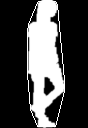
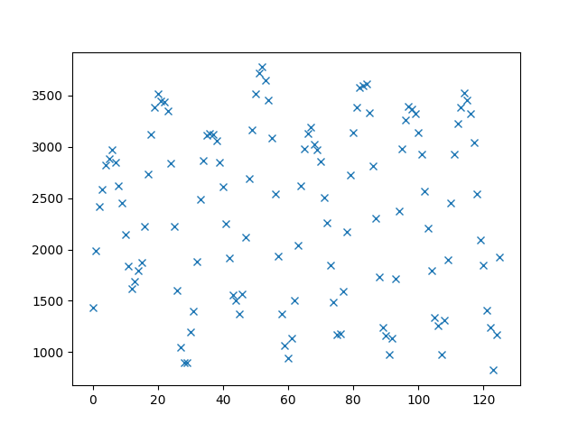

Following are the examples of computed image boundaries/contours:
00000076.png: |
00000115.png: |
Following are the examples of computed polygonal approximation of computed boundaries with epsilon = 1.414:
00000076.png: |
00000115.png: |
Following are the examples of computed convex hull:
00000076.png: |
00000115.png: |
Convex hull deficits area = convexHullArea - area under image boundaries
Following is the screenshot of table with computed values for few frames:
Please click here to view the Entire table.
Following are the examples of computed curvatures along the boundaries:
Curvature73.png: |
Curvature115.png: |
The bigger circles in the above images represent local maxima points.
Following are the examples of computed distance transform images of their corresponding silhoutte boundaries:
DT73.png: |
DT115.png: |
Following is the heat map of computed chamfer matching on all pairs of gait images in the provided sequence:
a. Yes, there is a periodicity in how it shows in results. In part 2, the perimeter and Area of convexity deficits values are following the same pattern for about every 30 images. The plotted values are shown below:
Perimeter.png: |
AreaOfDeficits.png: |
Also, in part 5, for a period of every 30 images, we see the same pattern of colors.
b. By computing the maximum and mimimum values of second order moments, M02 and M20, I observed that the low values correspond to narrow profiles and hogh values correspond to wide profiles. Following are the examples of each:
c. Yes. There is a joint at the local maxima and the local minima(the lower negative values) of the curvature. Segment the body parts according to these by segmenting the boundary curve.
Please click here to view the python script page which produced the above results.